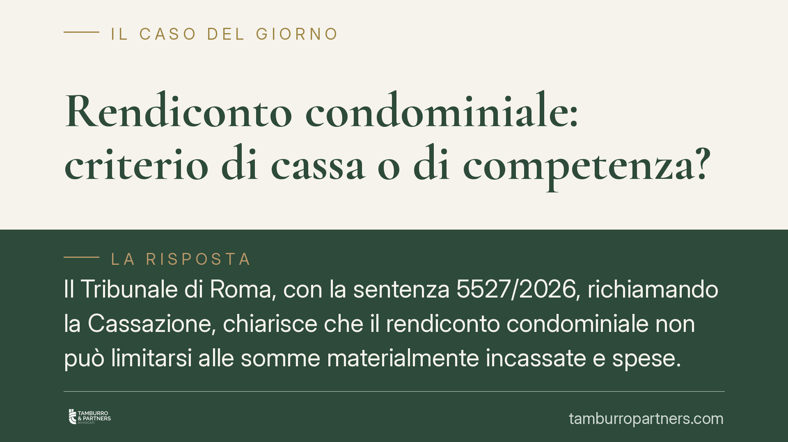

Rendiconto condominiale: criterio di cassa o di competenza?
Il Tribunale di Roma, con la sentenza 5527/2026, richiamando la Cassazione, chiarisce che il rendiconto condominiale non può limitarsi alle somme materialmente incassate e spese. Deve riflettere anche i debiti verso i fornitori e i crediti verso i morosi. Una pronuncia che incide sulla validità delle delibere di approvazione e sul lavoro dell'amministratore.

Il caso
Una condomina impugna la delibera che approva il rendiconto, contestando il metodo contabile seguito dall'amministratore. La questione è nota a chi frequenta le assemblee: il rendiconto va costruito registrando solo ciò che è entrato e uscito dalla cassa (criterio di cassa), oppure deve includere anche le poste maturate ma non ancora incassate o pagate (criterio di competenza)?
Il Tribunale di Roma, con la sentenza 5527/2026, risponde richiamando l'orientamento della Cassazione (sent. 25446/2025): il rendiconto condominiale si redige con criterio misto.
Inquadramento normativo
Il riferimento è l'art. 1130-bis del codice civile, introdotto dalla riforma del condominio del 2012. La norma prevede che il rendiconto consti di un registro di contabilità, di un riepilogo finanziario e di una nota sintetica esplicativa. L'obiettivo è dare ai condomini una rappresentazione chiara e veritiera della gestione.
Da qui la conclusione dei giudici. Un rendiconto limitato alla sola cassa nasconderebbe informazioni essenziali: i debiti verso i fornitori non ancora saldati e i crediti verso i condomini morosi. Chi legge il documento deve sapere non solo quanto è stato speso, ma quanto il condominio deve e quanto deve ancora riscuotere. Per questo il criterio di cassa va integrato con quello di competenza.
La competenza, in termini pratici, significa imputare costi e ricavi all'esercizio cui si riferiscono, a prescindere dal momento del pagamento. Se una fornitura è stata eseguita nell'anno, la relativa spesa va rilevata anche se la fattura sarà pagata l'anno successivo.
Quando la delibera è annullabile
Il punto più rilevante della pronuncia riguarda le conseguenze del vizio. Non ogni imperfezione contabile travolge la delibera. L'art. 1137, comma 2, del codice civile consente l'impugnazione delle delibere contrarie alla legge o al regolamento, ma la giurisprudenza richiede che il vizio sia concretamente rilevante.
Il Tribunale precisa che la delibera di approvazione del rendiconto è annullabile solo quando la violazione del criterio produce una divaricazione effettiva tra il risultato reale della gestione e la sua rappresentazione contabile. In altre parole: se l'errore metodologico non altera la sostanza dei numeri, non basta a invalidare la decisione assembleare.
È una lettura equilibrata. Protegge la trasparenza senza trasformare ogni contestazione formale in un'occasione di annullamento.
Implicazioni pratiche
Per l'amministratore cambia poco sul piano degli obblighi, ma molto su quello del rischio. Il rendiconto costruito solo per cassa resta esposto a impugnazione quando omette debiti e crediti significativi. La difesa in giudizio dipenderà dalla capacità di dimostrare che la rappresentazione, pur imperfetta nel metodo, è fedele alla realtà della gestione.
Per i condomini, la sentenza rafforza il diritto a un documento completo. Chi vuole contestare il rendiconto deve però andare oltre il rilievo formale: occorre indicare in che modo l'errore contabile ha falsato il risultato effettivo.
Per chi è in posizione di morosità, l'inclusione dei crediti nel rendiconto rende più visibile la propria esposizione e agevola le azioni di recupero del condominio.
Cosa fare in concreto
- Verificate il metodo contabile del rendiconto che vi viene sottoposto: controllate che siano indicati separatamente i debiti verso fornitori e i crediti verso morosi.
- Esaminate la nota sintetica esplicativa prima dell'assemblea: è lo strumento previsto dall'art. 1130-bis per comprendere la gestione.
- Prima di impugnare, individuate la concreta divaricazione tra risultato reale e rappresentazione contabile: senza di essa l'impugnazione è destinata al rigetto.
- Se siete amministratori, adeguate la redazione al criterio misto e conservate la documentazione che attesta la corrispondenza tra scritture e situazione effettiva.
- Rispettate i termini: l'impugnazione ex art. 1137 va proposta entro trenta giorni, che decorrono in modo diverso per condomini presenti dissenzienti e assenti.
Osservazione conclusiva
La pronuncia conferma una tendenza chiara: il rendiconto condominiale è un documento di rappresentazione sostanziale, non un semplice registro di cassa. L'attenzione si sposta dalla forma al merito dei numeri. Consigliamo di valutare caso per caso la rilevanza effettiva di ogni vizio contabile prima di avviare un contenzioso.
---
*Contributo informativo a cura di Tamburro & Partners - Avv. Giuseppe Tamburro. Non costituisce parere legale.*
Ogni condominio ha una storia a sé.
Se gestisci un'amministrazione e vuoi un confronto su una specifica questione condominiale, scrivi allo studio. Ti rispondiamo entro un giorno lavorativo.